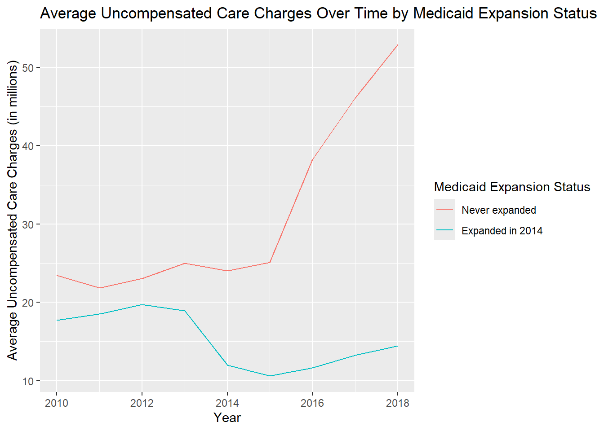
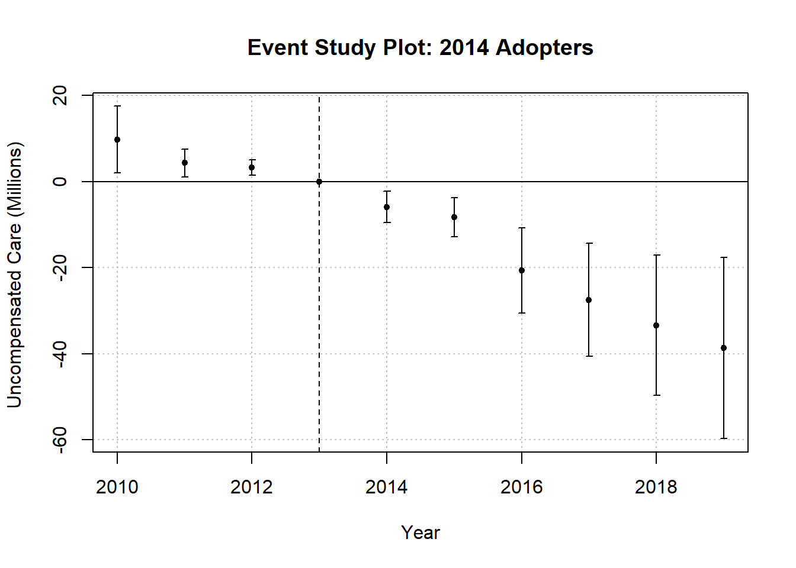
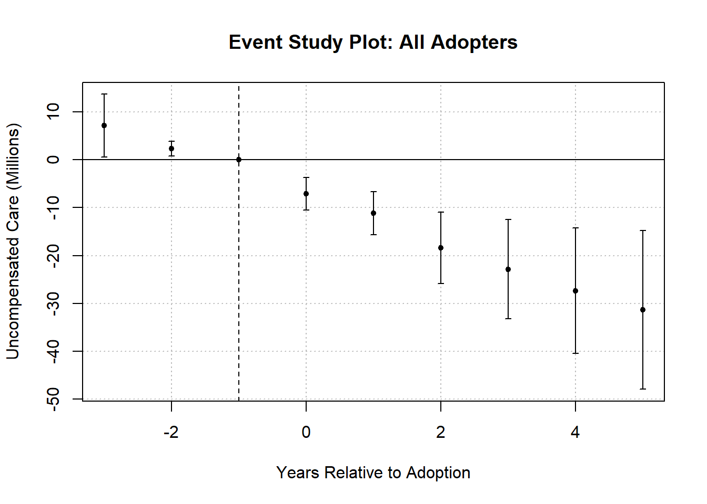

| Year | Average Uncompensated Care Charges (in millions) |
|---|---|
| 2010 | 17.36603 |
| 2011 | 17.85072 |
| 2012 | 19.01288 |
| 2013 | 19.25852 |
| 2014 | 16.03329 |
| 2015 | 15.71064 |
| 2016 | 20.33923 |
| 2017 | 23.29566 |
| 2018 | 26.41690 |
Homework 5 Submission 2
Data Cleaning
After loading the data, I created a subset of the data that includes only the states that never expanded Medicaid and those that adopted Medicaid expansion in 2014. I also created two new variables: post, which indicates whether the year is 2014 or later, and treat, which is an interaction term between post and expanded.
Summarizing the Data
Question 1: Uncompensated Care Over Time
As seen in Table 1, other than a drop in 2014, corresponding to Medicaid expansion adoption in many states, has overall increased over time.
Question 2: Uncompensated Care in Never Expanded States vs. 2014 Adopters
As seen in Figure 1, the drop in uncompensated care in 2014 is likely driven by 2014 Medicaid expansion adopters. The graph suggests a potential treatment effect of Medicaid expansion decreasing uncompensated care given the divergence in trends between the two groups after 2014.

Question 3: 2x2 DD Table for Never Expanded States vs. 2014 Adopters
As seen in Table 2, 2014 adopters appear to have a substantial drop in uncompensated care from 2012 to 2015, while the never expanded states have a slight increase in uncompensated care over the same period. This suggests a potential treatment effect of Medicaid expansion on reducing uncompensated care.
| Group | Pre | Post |
|---|---|---|
| 2014 expanders | 19.74580 | 10.64030 |
| Never expanded | 23.04128 | 25.13676 |
Question 4: Medicaid Expansions and Uncompensated Care
The trends, namely the drop in uncompensated care following Medicaid expansion adoption in 2014 and the divergence in uncompensated care seen in 2014 adopters and never adopted states, suggest that Medicaid expansion may have an effect on reducing uncompensated care. Uncompensated care consists of charity care and bad debt, both of which could be influenced by Medicaid expansion. Medicaid expansion would likely reduce charity care by providing insurance coverage to previously uninsured individuals, thus reducing the need for hospitals to provide free care. Expansion may also reduce bad debt by increasing the likelihood that patients can pay their medical bills through insurance coverage.
Estimating ATEs
Question 5: DD for 2014 adopters vs. no adoption
As seen Table 3, the coefficient on the treatment variable is negative and statistically significant, suggesting that Medicaid expansion in 2014 is associated with a decrease in uncompensated care charges. The magnitude of the coefficient indicates that, on average, there is a reduction of approximately $23.7 million in uncompensated care charges for 2014 adopters compared to never adopters.
| (1) | |
|---|---|
| + p < 0.1, * p < 0.05, ** p < 0.01, *** p < 0.001 | |
| (Intercept) | 23.317*** |
| (<0.001) | |
| postTRUE | 17.787*** |
| (<0.001) | |
| expandedTRUE | -4.395** |
| (0.002) | |
| treat | -23.721*** |
| (<0.001) | |
| Num.Obs. | 30903 |
| R2 | 0.024 |
Question 6: TWFE for 2014 adopters vs. no adoption
After controlling for hospital and year fixed effects, the coefficient on the treatment variable remains negative and statistically significant, as seen in Table 4. The magnitude of the coefficient is slightly more negative than the DD estimate, indicating a reduction of approximately $25.2 million in uncompensated care charges for 2014 adopters compared to never adopters.
| (1) | |
|---|---|
| + p < 0.1, * p < 0.05, ** p < 0.01, *** p < 0.001 | |
| treat | -25.217*** |
| (<0.001) | |
| Num.Obs. | 30804 |
| R2 | 0.829 |
Question 7: TWFE for all adopters vs. no adoption
When including all adopters, the coefficient on the treatment variable is still negative and statistically significant, as seen in Table 5. The magnitude of the coefficient is less less negative than the 2014-only TWFE estimate, indicating a reduction of approximately $11.4 million in uncompensated care charges for all adopters compared to never adopters.
| (1) | |
|---|---|
| + p < 0.1, * p < 0.05, ** p < 0.01, *** p < 0.001 | |
| treat | -11.452*** |
| (<0.001) | |
| Num.Obs. | 29269 |
| R2 | 0.793 |
Question 8: Event Study Graph for 2014 adopters vs. no adoption

NULLQuestion 9: Event Study Graph for all adopters vs. no adoption

NULLQuestion 10: Synthesis
Overall, the results suggest that Medicaid expansion is associated with a reduction in uncompensated care charges. The DD and TWFE estimates indicate a statistically significant decrease in uncompensated care for both 2014 adopters and all adopters compared to never adopters. The event study graphs also show a clear drop in uncompensated care following Medicaid expansion adoption, particularly for 2014 adopters. The event study graphs for all adopters have overall small confidence intervals and are close to zero in the pre-treatment period, fulfilling the parallel trends assumption. The event study graph for 2014 adopters has wider confidence intervals in the pre-treatment period, suggesting that the two groups were already diverging, meaning there are some concerns regarding parallel trends. In terms of TWFE, there is a possibility of biased estimators when analyzing staggered treatment times for Medicaid expansion, as earlier treated states become part of the control group for later treated states, which would make the control group less representative.